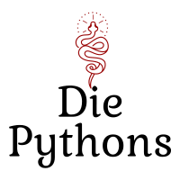

Das Geldwäsche Erkennungstool

Datei Eingabe
Wählen Sie eine JSON-Datei aus:
GO
Export to Excel
Export
Filter Auswahl
Smurphing
max. Betrag:
min. Anzahl:
Varianz (in %)
Signalwörter
Liste der Signalwörter bearbeiten
Korruptionsindex
max. Korruptionsindex
Länderliste mit Korruptionsindex bearbeiten